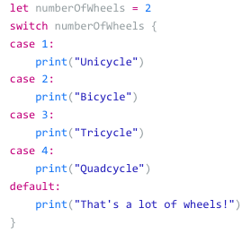

Lesson 4: Control Flow
Logical operators are symbols to describe something
We implement it in the if statement. If statement is when this happens, do this.

There's else which means if the if-statement is wrong, do this.

Switch operator is similar but is layed in different ways. Case is if and default is else.

Ternary Operator is putting in a two ratio to find if it's true or false.